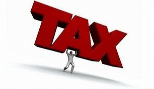

#REJECT FINANCE BILL2024
 Here are the 16 changes effected;1. The Finance Committee agreed to remove the proposed 16 per cent Value Added Tax imposed on bread after an uproar from the public. Manufacturers had estimated that should the Finance Bill sail through with the VAT, the price of standard bread would increase by Ksh10.
2. The Head of State approved the removal of excise duty on vegetable oil. Initially, the proposal had imposed a 25 per cent excise duty on vegetable oils which, according to the Kenya Association of Manufacturers (KAM), could have spiked the price of cooking oil by 80 per cent and caused ripple effects on other products like soap.
3. State House removed VAT imposed on the transportation of sugar cane. In the contentious Bill, the state had proposed a 16 per cent VAT on the transportation of cane to the sugar factories, move that could have spiked sugar prices.
4. The Committee removed VAT on financial services and foreign exchange transactions. Initially, the proposal could have increased taxation on financial services from 15 per cent to 40 per cent which could have affected forex transactions.
5. The new changes also reversed the proposed increase in mobile money transfer charges. Treasury had proposed an increase of excise duty from 15 per cent to 20 per cent on mobile money transfer charges.
6. The Committee further removed the proposed motor vehicle tax which attracted immense uproar from motorists. The proposal required all vehicle owners to pay 2.5 per cent of their car value annually with Ksh5,000 as the base minimum and Ksh100,000 as the maximum.
7. The State House converted the proposed Housing Fund and Social Health Insurance levies to tax deductibles meaning they will not attract income tax, putting much more money in the pockets of employees.
8. The government dialed down the proposed Eco Levy to be levied only on imported finished products. Locally manufactured products will, therefore, not attract the Eco Levy. Manufacturers had complained that the levy would have stifled the growth of local manufacturing.
9. The Eco Levy will also not be levied on locally manufactured products, including sanitary towels, diapers, phones, computers, tyres and motorcycles.
10. Small businesses valued at less than Ksh8 million will not be required to apply for VAT registration. The proposal had earlier dropped the requirement to business with more than Ksh5 million valuation.
11. After months of push and pull, farmers and small businesses with less than a turnover of Ksh1 million will not be required to register for the electronic Tax Invoice Management System (eTIMS).
12. Excise duty that had been imposed on imported table eggs, onions and potatoes to protect local farmers. The Finance Bill had proposed the introduction of 16 per cent VAT.
13. The Committee revised the imposition of excise duty on alcoholic beverages on the basis of alcohol content and not volume. The higher the alcohol content the more excise duty it will attract. Consequently, alcohol manufacturers are expected to make safer and cheaper alcohol.
14. The Committee increased pension contributions exemption from Ksh20,000 to Ksh30,000.
15. After concerns over budget cuts in funds set aside for the recruitment of Junior Secondary School interns, the Committee has increased from Ksh13.4 billion to Ksh18 billion.
16. Funds have also been provided to hire 20,000 teacher interns next month. The policy is now to transition teachers from internship to permanent and pensionable terms.
WE SAID REJECT NOT AMMEND